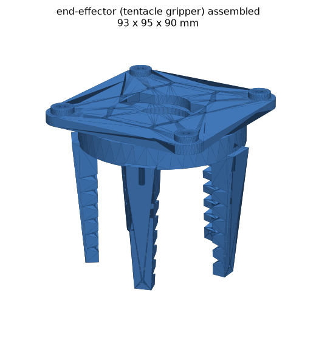

RoomCleaner: Autonomous Laundry-Picking Cable Robot
Four ceiling winches fly a claw on cables (think stadium SkyCam) while a camera finds the laundry. Everything below is live: the control loop, the physics, the CAD. Click the floor to drop laundry. Drag the claw. Push the cables to their limits.
Telemetry
Cable length (m)
How it works
Four subsystems, each isolated behind a clean interface so the same control code runs the simulator and the real motors.
Where's the claw?
A cable's length is just the distance from its ceiling corner to the claw. Invert that and you convert go to (x,y,z) into four spool lengths.
Find the laundry
An open-vocabulary vision model (YOLO-World) detects clothes by name, then maps each pixel to a floor coordinate.
Tentacle hand
Five tendon-driven curling fingers rake and wrap crumpled cloth; one servo closes them all. Better than a rigid claw on a soft target.
Scan → grab → deliver
An explicit state machine clears the floor nearest-first, geofenced away from the walls and the ceiling fan.
┌ perception ─────────────────────┐ ┌ planning ──────────────────┐ camera ▸ YOLO-World ▸ floor (x,y) ──▸ state machine ▸ inverse kinematics ▸ 4 cable lengths └─────────────────────────────────┘ └────────────────────────────┘ USB serial ──▸ Arduino + 4× DRV8825 ──▸ corner winches WiFi ──▸ ESP32 on the claw ──▸ tentacle gripper (battery)
Engineering analysis
The physics is closed-form, so the design validates itself. These charts render live from the same equations that drive the robot.
Cable-tension cost map
peak motor load across the floor · z = 0.3 m
Maximum payload
load where the busiest cable hits the motor limit
Force explorer: solve the statics yourself
drag the claw or drive it with the sliders; the four cable tensions are solved live from the robot's equilibrium equations · dynamic load = m·(g + a)
How precisely to measure the ceiling
Perturbing the anchor positions and re-solving the forward kinematics shows claw error ≈ measurement error. Target: measure each corner to ~1 cm for ~1–2 cm grab accuracy.
Cables pull, never push
Holding the claw means finding four non-negative tensions that cancel gravity. Where none exist (near the walls, behind the fan) is exactly the unreachable border, computed, not guessed.
The gripper

Grabbing flat, crumpled cloth off a hard floor is the classic failure point. The answer isn't a claw. It's a ring of soft, tendon-driven tentacles that curl inward and gather the laundry toward the center.
- Fully parametric: modeled in code (CadQuery), exports STEP + STL
- Five TPU fingers with ventral notches that close when a tendon pulls
- One servo curls all five together; needle-gripper fallback for flat socks
- Wireless: an ESP32 + battery on the claw take grip commands over WiFi
Bill of materials
Everything mechanical that could be printed, was: eight parametric parts modeled in code. The bought parts were each sized from the analysis above (motor torque from the tension map, line strength from peak load, supply wattage from total draw). Total build ≈ $230, reusing a computer for vision.
Motion & structure the four corner winches and what holds them up
| Component | Purpose | Qty | Est. |
|---|---|---|---|
| NEMA 17 stepper, 42 N·cm | Ceiling winches, sized to 2.6× the worst-case cable tension | 4 + 1 spare | $33 |
| Winch spool · motor mount · corner guide | 3D-printed drivetrain (parametric CadQuery, PETG) | 4 each | – |
| UHMWPE (Dyneema) braided line, 50 lb | The cables: near-zero stretch keeps position accurate; ~15× load margin | 150 m | $8 |
| Stainless lag eye anchors, 700 lb, closed-eye | Into ceiling joists, the one part that must never be plastic | 4 | $14 |
Control & power one wired controller drives all four axes
| Component | Purpose | Qty | Est. |
|---|---|---|---|
| Arduino Uno + CNC Shield + 4× DRV8825 | 4-axis step/dir motor control; custom firmware speaks a simple serial protocol | 1 kit | $17 |
| Roller-lever limit switches | Homing: each winch finds its zero cable length at startup | 4 + spares | $6 |
| 12 V 6 A supply + 7.5 A inline fuse | Motor rail, killed by a switched power strip; fuse protects the wiring | 1 | $28 |
| Extensions, hookup wire, ceiling raceway | Corner runs hidden along the ceiling seams, no visible wiring | set | $45 |
Perception one camera sees the whole floor
| Component | Purpose | Qty | Est. |
|---|---|---|---|
| 1080p UVC board camera, 130° FOV | Ceiling-mounted; wide angle covers every floor corner (computed, not guessed) | 1 | $19 |
| Vision compute | Reused PC runs YOLO-World open-vocabulary detection | – | $0 |
Wireless effector only the four cables touch the claw
| Component | Purpose | Qty | Est. |
|---|---|---|---|
| MG996R servo (180° positional) | One servo curls all five tentacle tendons | 1 + 3 spares | $18 |
| ESP32 dev board | WiFi grip/release server riding on the claw | 1 + 1 spare | $13 |
| 2S LiPo + charger + 6 V buck + switch | Self-contained power; dock-charging at the rest pose is the end-state | 1 set | $38 |
Printed parts & fasteners eight parametric models, STEP + STL in the repo
| Component | Purpose | Qty | Est. |
|---|---|---|---|
| Tentacle fingers (TPU 95A) | Tendon-driven curling fingers: dorsal skin + ventral notches | 5 | $22 filament |
| Effector frame · tentacle hub · camera mounts | The claw assembly (PETG/PLA), heat-set-insert ready | 4 parts | – |
| M3 stainless kit + brass heat-set inserts | Metal threads in plastic, the cheap upgrade that outlasts self-tapping | 2 kits | $19 |
Built with
Robotics, computer vision, controls, mechanical CAD, and embedded firmware. One coherent system.